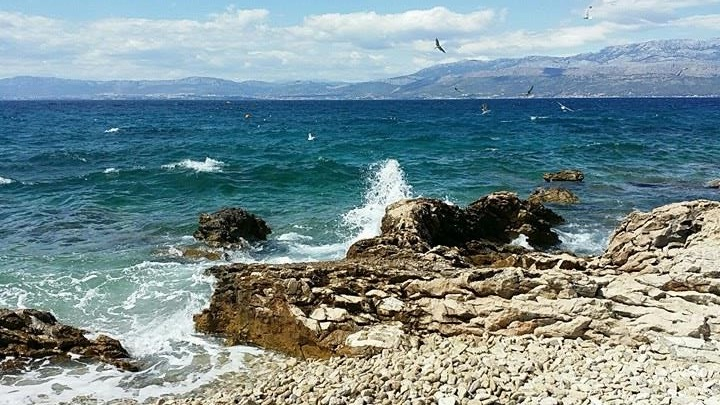

Name: Jessica Livesey
Address: House 8, Leek Road Houses, Leek Road, Staffordshire University, Stoke-on-Trent, ST4 2XQ
Phone Number: 07816123444
Email Address: jessica@liveland.co.uk
Date of Birth: 16/10/1998
Achievements / Further Information:
As you can see from the Education page I am currently studying Business Information Technology at Staffordshire University.
I have been apart of the Girl Guide movement since an early age, I have achieved the Baden Powell award and have often helped out with younger guides acting as a mentor and a role model.
I particularly enjoy learning about technology and how software can be used in businesses, during my spare time I have created a few websites using wordpress.

Shopping
In my spare time I love to shop, shops are always getting new things in depending on the time of year so there is always a reason to go shopping.
Interested In Travelling
I am very interested in travelling as I enjoy visiting different places. This is shown through the amount of holidays I go on yearly as last summer I went to Croatia, Paris, Lanzarote and Amsterdam, and this summer I am going to Italy, America, London and Spain.
Royal Mail - Data Entry Keyer (25/11/17 - 17/12/17)
During the busy Christmas periods I gained a temporary job at Royal Mail
Exact Abacus Limited - Call Centre Department (01/08/15 - 31/12/16)
Whilst studying I have worked part-time at weekends and evening in a call centre as a customer services operator
Exact Abacus Limited - Warehouse Department (29/06/15 - 25/08/15)
I worked during summer holidays in a warehouse picking and packing stock.
All of these jobs have given me experience of a work environment and have helped me to improve my communication and organisational skills.